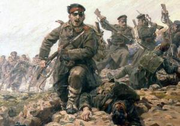
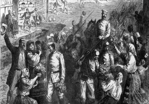

Освободителна война
Горна Джумая е освободена от османско иго на 5/18 окт., в деня на обявяването в Балканската война 1912 — 1913; още преди за почването на бойните действия турското население се изселва. След Междусъюзническата война 1913 през града преминават хиляди бежанци от Вардарска и Егейска Македония; част от тях се заселват в него От 1913 градът е окололен център; става седалище на 14. македонски полковнкик. Обликът на Горна Джумая започва да се изменя след Първата световна война 1914 — 1918. През 1917 е завършена теснолинейната железопътна линия Радомир — Горна Джумая — Петрич. След Ньойския мирен договор 1919 в града се преместват окръжни учреждения и Солунската гимназия „Св. св. Кирил и Методий", днешна Национална хуманитарна гимназия „Свети свети Кирил и Методий". Продължава заселването на бежанци от всички краища на Македония. През 1925 има 835 бежански семейства — 165 от тях са от Кукушко, 147 — от Демирхисарско, 58 — от Гевгелийско, 49 — от Малешевско, 32 — от Ениджевар-дарско, 30 — от Дойранско. Основен поминък на населението след 1912 е отглеждането на тютюн и първичната му обработка. Съживяват се търговията и занаятите (шивачество, обущарство, хлебар¬ство, зидарство). Откриват се няколко банки — Българската народна банка (1912), клон на Българската земеделска и кооперативна банка (1913), Популярна банка (1914). Началото на кооперативното движение се поставя с откриването на клон на потребителната кооперация „Освобожде¬ние" (1919) и учредяването на тютюно-производителната кооперация „Бохча" (1920); през 1919 — 1934 се създават още 15 кооперативни сдружения и водният синдикат „Бело поле" (1931). Откриват се тютюневи складове на „Никотея" (1914) и на др. акционерни дружества. Създават се дребни промишлени предприятия — мелници, керамична фабрика, мебелна и шперплатна фанрика. През 1913 е основана група на БКП, през 1914 — земеделска дружба. В града се учредяват секция към Съюза на транспортинате работници (1919), секция към Тютюноработнически съюз (1919), секция на кожаро-обущарските работници (1921), секция на строителхите работници (1922); които защитават икономическите, интереси на наемните работници. Населението на града организира протестно събрание против Ньойския мирен договор 1919. По време на Септемврийското въстание 1923, на 22 септември вечерта, в м.Лозята, край града се сформира Горноджумайският въстаннчески отряд „Христо Ботев". На 12 срещу 13 септ. 1924 Вътрешната македонска революционна организация предприема наказателна акция срещу участниците в заговора против Тодор Александров, дейци на Илинденската организация, Македонската федеративна организация и БКП. През 1929 е образувана група на Вътрешната македонска революционна организация.